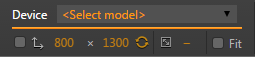

As your mobile audience grows, responsive mobile-friendly web design becomes all the more important. Web content needs to look and feel great across a wide variety of devices and network conditions. But testing the quality of your mobile experiences takes longer and makes debugging more complex.
Device mode brings the insights of mobile testing to your browser tab through the power of mobile emulation.
Accurately simulate device input for touch events, geolocation, and device orientation.
Enhance your current debugging workflow by combining device mode with the existing DevTools.
Note: Some of this documentation might be ahead of the stable version of Chrome.
If you are unable to locate a feature, try using Chrome Canary, which contains the latest version of the DevTools.
Enabling device mode
Turn on device mode by pressing the Toggle device mode icon.
When device mode is enabled, the icon turns blue and the viewport transforms into a device emulator.
You can also toggle device mode on and off using the keyboard shortcut:
Ctrl+Shift+M (or Cmd+Shift+M on Mac).
The initial device mode view.
Using the screen emulator
Device mode's screen emulator helps you test the responsiveness of your site, without the hassle of switching between multiple devices.
Get started with device presets
To jump-start your debugging process, device mode has a variety of emulation presets. Quickly emulate a particular device by selecting a model from the preset dropdown.
Skip manual configuration by choosing from a list of popular device presets.
Each preset automatically configures device emulation in the following ways:
Specifies the UA string for requests.
Sets the device resolution and pixel ratio.
Enables touch emulation (if applicable).
Emulates mobile scrollbar overlays and meta viewport.
Autosizes (boosts) text for pages without a defined viewport.
Tips: Toggle the screen resolution emulator on and off using the Emulate screen resolution checkbox. Alternate between portrait and landscape views by clicking the Swap dimensions icon. Select the Fit checkbox to ensure that the emulated screen remains fully visible inside your browser viewport, shrinking to fit if necessary. (This setting is for convenience and does not emulate the device differently.)
Customize the screen settings
To get more granular control over the screen emulator, you can tune the resolution settings below the device preset dropdown.

Customize the screen emulator by adjusting the screen resolution and device pixel ratio.
To emulate a custom screen size, manually set the CSS pixel dimensions of the device in the width and height fields.
If you want to emulate a Retina device from a non-Retina machine or vice versa, adjust the Device pixel ratio field.
The device pixel ratio (DPR) is the ratio between logical pixels and physical pixels. Devices with Retina displays, such as the iPhone 5, have higher pixel density than standard devices, which can affect the sharpness and size of visual content.
Some examples of DPR-sensitivity on the web are:
CSS media queries such as @media (-webkit-min-device-pixel-ratio: 2), (min-resolution: 192dpi) { ... }
Note: If you have a native Retina display, you'll notice that low dpi assets look pixelated while higher-dpi assets are sharp. To simulate this effect on a standard display, set the DPR to 2 and scale the viewport by zooming. A 2x asset will continue to look sharp, while a 1x one will look pixelated.
Emulating network connectivity
Optimizing your site's performance under varying network conditions is a key aspect of developing for a mobile audience.
Device mode's network conditioning allows you to test your site on a variety of network connections, including Edge, 3G, and even offline. Select a connection from the preset dropdown to apply network throttling and latency manipulation.
Select from a list of network presets to apply conditioning.
Network throttling artificially limits the maximum download throughput (rate of data transfer). Latency manipulation enforces a minimum delay in connection (RTT).
Inspecting media queries
Media queries are an essential part of responsive web design. Device mode makes media queries readily accessible and easy for you to inspect.
To view the media query inspector, click the Media queries icon in the upper left corner of the viewport. The DevTools detect media queries in your stylesheets and display them as colored bars in the top ruler.
The media query inspector.
Media queries are color-coded as follows:
Queries targeting a maximum width.
Queries targeting widths within a range.
Queries targeting a minimum width.
Preview screen styles
Click a media query bar to adjust the emulator resolution and preview styles for the targeted screen sizes.
View CSS
Right-click a bar to view where the media query is defined in CSS and jump to the definition in source code.
Use the media query inspector to preview styling and locate the source CSS.
Tip: As you work with the media query inspector, you might find that you don't always want to use the mobile emulator. To turn off mobile emulation without exiting device mode, click the Reset all overrides icon and refresh the page.
Preview styles for more media types
The media query inspector targets styles intended for screens. If you want to preview styles for other media types, such as print, you can do so in the media pane of the emulation drawer.
Open the DevTools emulation drawer by clicking the More overrides icon in the top right corner of the browser viewport. Then, select Media in the emulation drawer.
The media pane.
Select the CSS media checkbox, and choose a media type from the dropdown list.
Emulating device sensors
Because most desktops don't have touch screens, GPS chips, or accelerometers, these inputs can be difficult to test on your development machine. Device mode's sensor emulators reduce the overhead of testing by emulating common mobile device sensors.
To access the sensor controls, open the DevTools emulation drawer by clicking the More overrides icon in the top right corner of the browser viewport. Then, select Sensors in the emulation drawer.
The sensors pane.
Note: If your app detects sensors onload using JavaScript (such as Modernizr), make sure that you reload the page after enabling sensor emulators.
Trigger touch events
The touch screen emulator lets you accurately test touch events and sequences as if you were using a touch-enabled device.
Enable touch emulation by selecting the Emulate touch screen checkbox in the sensors pane of the emulation drawer.
When you interact with the emulated viewport, the cursor changes into a fingertip-sized circle and touch events (such as touchstart, touchmove, and touchend) fire as they would on a mobile device.
Note: To trigger elem.ontouch* handlers, you must run Chrome with the ‑‑touch‑eventscommand line flag. Touch emulation currently does not trigger these handlers by default.
Tip: Hold Shift while dragging the mouse to emulate a pinch gesture.
Because mouse events can still fire on touch devices, the touch emulator does not disable mouse events entirely.
Simulate multi-touch
You can simulate multi-touch events on devices that support multi-touch input, such as laptops with trackpads. For more information about setting up multi-touch simulation, see the "Developer Tools" section of the Multi-touch web development guide on HTML5 Rocks.
Unlike desktops, mobile devices commonly use GPS hardware to detect location. In device mode, you can simulate geolocation coordinates to use with the Geolocation API.
Enable the geolocation emulator by selecting the Emulate geolocation coordinates checkbox in the sensors pane of the emulation drawer.
Geolocation emulator enabled.
You can use this emulator to override position values for navigator.geolocation, as well as simulate cases when geolocation data is unavailable.
Tip: Try out the geolocation emulator using this maps demo.
Simulate device orientation
If you need to test accelerometer data used with the Orientation API, you can simulate the data using the accelerometer emulator.
Enable the accelerometer emulator by selecting the Accelerometer checkbox in the sensors pane of the emulation drawer.
You can manipulate the following orientation parameters:
α
Rotation around the z-axis.
β
Left-to-right tilt.
γ
Front-to-back tilt.
You can also click and drag the model accelerometer to the desired orientation.
Device Mode offers a wide array of devices for emulation.
You can add a custom device if you find an edge-case or niche device that isn't covered.
To add a custom device do the following:
Go to the DevTools Settings.
Activate the Devices tab.
Click on the "Add custom device" button at the bottom of the panel.
Fill in the form that appears at the top of the list.
Press "Add Device"
Enable Device Mode and find your custom device in the device menu.
Adding a device to emulate Googlebot.
Limitations
Although Chrome's device mode offers many powerful emulation tools, it does have some limitations. Currently known issues are described below.
Device hardware
GPU and CPU behavior are not emulated.
Browser UI
System displays, such as the address bar, are not emulated.
Native displays, such as <select> elements, are not emulated as a modal list.
Some enhancements, such as number inputs opening a keypad, might vary from actual device behavior.
Browser functionality
WebGL operates in the emulator, but is not supported on iOS 7 devices.
MathML is not supported in Chrome, but is supported on iOS 7 devices.
Despite these limitations, the device mode emulators are robust enough for most tasks. When you need to test on a real device, you can use the remote debugging DevTools for additional insight.